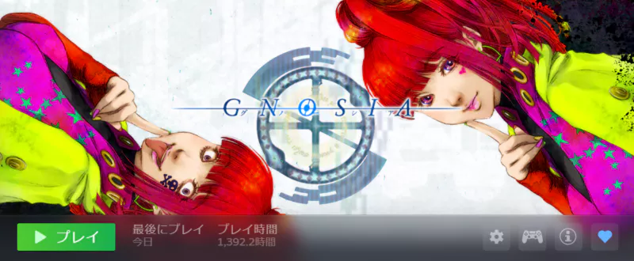

前言
Independent Creative Works “Sakura ARC”是由创作者 Haru Minamo 主理的独立创意单元，致力于跨越独立游戏、小说、音乐等多重领域，谱写动人心弦的“故事”。
制作契机：唤醒逻辑推理的乐趣
最初，我只是作为一个忠实粉丝在享受各种经典悬疑游戏——无论是 Chunsoft 的音响小说系列（如《恐怖惊魂夜》《街》《428：被封锁的涩谷》），还是《逆转裁判》《大逆转裁判》《超自然侦探社》《侦探神宫寺三郎》等名作系列。
迎来转折是因为我彻底迷上了以狼人杀为基础的《古诺希亚（Gnosia）》。在那里，我重新发现并体会到了“用自己的大脑构建推论并一步步抵达真相”的纯粹乐趣。
随后，在游玩《回归海老名岛/回到シロナガスクジラ岛》和《极乐迪斯科（Disco Elysium）》等话题之作的过程中，我一边为它们压倒性的世界观所折服，同时作为一名悬疑爱好者，内心也涌起了一股强烈的冲动：“我想做一部更加纯粹、专注于逻辑解谜的作品。我一定能呈现出更具说服力的悬疑解谜体验。”正是被这股强烈的冲动所驱使，我开启了本项目的开发。
本作之所以采用“实写（真人实景）视觉小说”的形式，一方面当然是致敬经典作品所展现的“唯有实写才能营造出的独特紧张感与沉浸感”，但另一方面，也有更深层次的战略考量：在 Steam 这样一个陈列着无数独立游戏的庞大平台上，在以动漫风格视觉为主流的悬疑解谜品类中，实写所带有的独特空气感将成为一个强有力的“差异化吸睛点（Hook）”。
而且，曾经需要耗费巨额成本与人力的实写制作，在利用 ComfyUI 等现代生成式 AI 技术的情况下，即便是个人或微型团队，也能高水准地实现。正是这一“技术上的突破”，让本作的诞生变为了可能。
追求“公平的逻辑谜题”
对于悬疑解谜这个品类，我并没有什么特别的执念或高尚的理由。只是作为一个单纯的爱好者，我心中有着一种强烈的愿望：“我想为读者和玩家呈现一场公平的逻辑推理谜题。”
仅凭给出的线索，推导出逻辑上唯一的正确答案。
在真人实景带来的绝佳真实感中，亲身体验那种智力博弈的快感。
Sakura ARC 所追求的，正是这种“诚实的解谜体验”。
为什么选择使用 AI？
Sakura ARC 使用 AI（人工智能）的最大原因，当然是压倒性的“效率”。然而，远不止于此。还有一个更为私密、也更为迫切的理由。
一是创作者自身非常不擅长所谓的“人际斡旋”与“团队管理”。二则是作为一名没有任何雄厚资金支持的独立创作者的现实。
原本，制作一部实写作品需要庞大的工作人员和演员班底，以及将他们拧成一股绳的组织管理能力。而 AI 却帮我优雅地飞跃了这些重重难关。通过将 AI 视为自身的“延伸与拓展”，即便不隶属于任何组织、不投入巨额资金，仅仅凭单枪匹马，也同样能将理想具现化。AI，正是“笨拙的个人”能与世界平等交锋的唯一终极武器。
结语：一场永无止境的实验
说实话，我并没有什么宏伟的蓝图或冠冕堂皇的理由。我只是在纯粹地享受将 AI 视作搭档、单枪匹马制作游戏以及搭建这个网站本身的“实验”过程。
顺带一提，前半部分提到《古诺希亚》和《逆转裁判》等游戏的名字，其实只是为了“蹭大作流量做SEO优化！”而让AI故意写出来的场面话而已。
……不过，我曾经像疯了一样沉迷于这些神作，也绝对是不折不扣的大实话。

今天（2026年5月13日），本作《神屋侦探事务所：女子高生的消えた夏》的 Steam 商店页面已成功提交审核。抱着“如果在 Steam 上火了那就太幸运了”这样轻松的心态，今后我也想继续按照自己的节奏，把我渴望做出的东西一件件亲手呈现出来。